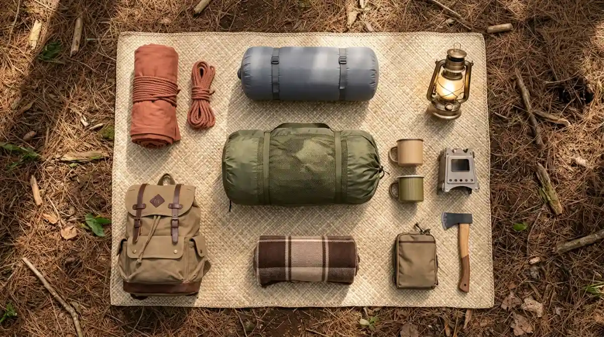

Setup tenda camping estetik — perpaduan fungsi dan keindahan
visual di alam terbuka.
Setup tenda camping estetik — perpaduan fungsi dan keindahan
visual di alam terbuka.
Camping estetik adalah kegiatan berkemah yang menggabungkan fungsi bertahan di alam dengan penataan visual yang menarik dan layak diabadikan, mencakup pemilihan gear, tata letak tenda, dan pencahayaan yang harmonis.
- Apa Itu Camping Estetik dan Mengapa Semakin Populer?
- Perbedaan Camping Estetik, Glamping, dan Camping Biasa
- Perlengkapan Wajib untuk Camping Estetik
- Cara Membuat Setup Tenda yang Estetik
- Lokasi Camping Estetik Terbaik di Indonesia
- Tips Fotografi untuk Camping Estetik
- Kesalahan Umum dalam Camping Estetik
- Berapa Biaya Camping Estetik?
- FAQ
Apa Itu Camping Estetik dan Mengapa Semakin Populer?
Camping estetik adalah pendekatan berkemah yang menempatkan keindahan visual sebagai elemen penting sejajar dengan fungsi, bukan sekadar berlindung dari cuaca tetapi juga menciptakan suasana yang menyenangkan secara estetika.
Camping estetik berbeda dari camping konvensional dalam beberapa hal mendasar. Pada camping biasa, prioritas utama adalah fungsi: tenda berdiri, api menyala, tidur aman. Pada camping estetik, elemen visual ditambahkan secara sadar: warna gear yang senada, penataan area duduk yang nyaman, pencahayaan malam yang hangat, dan komposisi lingkungan yang layak difoto.
Tren ini tidak lahir dari kekosongan. Meningkatnya penggunaan media sosial, popularitas konten outdoor di YouTube dan TikTok, serta ketersediaan gear berkualitas dengan desain modern mendorong lebih banyak orang untuk memikirkan tampilan kemah mereka secara lebih serius.
Camping estetik cocok untuk siapa saja, mulai dari pasangan yang mencari pengalaman romantic getaway, keluarga yang ingin momen liburan berkesan, hingga konten kreator yang membutuhkan latar visual alam terbuka yang kuat.
Perbedaan Camping Estetik, Glamping, dan Camping Biasa
Camping estetik, glamping, dan camping biasa adalah tiga pendekatan berbeda dalam menikmati alam: camping biasa berfokus murni pada fungsi, glamping menawarkan kemewahan di alam, sementara camping estetik menyeimbangkan fungsi, kenyamanan, dan daya tarik visual.
Camping Biasa: Gear standar, prioritas fungsi, biaya rendah, tidak memprioritaskan tampilan visual.
Camping Estetik: Gear dipilih berdasarkan fungsi sekaligus tampilan, palet warna terencana, penataan area kemah disengaja, dan dokumentasi visual menjadi bagian dari pengalaman.
Glamping: Fasilitas mewah di alam (kasur, kamar mandi, listrik), biasanya disediakan oleh operator, harga lebih tinggi, estetika sudah disiapkan pihak pengelola.
Camping estetik berada di tengah: mandiri seperti camping biasa, namun dengan perhatian visual seperti glamping, tanpa biaya glamping yang tinggi.
Perlengkapan Wajib untuk Camping Estetik
Perlengkapan camping estetik mencakup tenda dengan desain visual menarik, sleeping bag berwarna netral atau pastel, sumber cahaya hangat, dan perabot lipat yang fungsional sekaligus indah dipandang.
Tenda
Tenda dome transparan (bubble tent), tenda A-frame, atau tenda geodesic dengan warna earth tone saat ini paling populer di komunitas camping estetik Indonesia. Pilih tenda dengan warna sage green, beige, terracotta, atau putih krem untuk tampilan yang mudah dipadukan dengan elemen alam.
Pencahayaan
Pencahayaan adalah elemen paling transformatif dalam camping estetik. String lights atau fairy lights dengan cahaya warm white (2700K-3000K) menciptakan suasana hangat yang sangat fotogenik saat malam. Lentera gas atau lentera LED bergaya vintage juga menjadi pilihan populer.
Furnitur Lipat
Kursi lipat bergaya director chair, meja lipat kayu atau bambu, dan hammock dengan warna netral adalah tiga item furnitur yang paling sering muncul dalam konten camping estetik. Pastikan semua item dapat diangkut dengan mudah dan ringan.
Perlengkapan Masak
Peralatan masak stainless atau enamelware dengan desain klasik jauh lebih estetik dibanding panci aluminium polos. Set kopi pour-over portable, french press mini, atau moka pot adalah aksesori masak yang paling sering difoto dalam konten camping.
Sleeping System
Sleeping bag berwarna netral dipadukan hammock rajut atau selimut wol bermotif etnik menciptakan kombinasi visual yang kuat. Hindari sleeping bag dengan warna mencolok yang tidak harmonis dengan palet warna keseluruhan kemah.

Perlengkapan camping estetik — gear fungsional dengan tampilan visual yang harmonis.Cara Membuat Setup Tenda yang Estetik
Setup tenda estetik yang baik membutuhkan tiga langkah utama: memilih lokasi dengan latar belakang menarik, menentukan palet warna gear, dan mengatur tata letak area kemah secara simetris atau organik yang disengaja.
Langkah 1: Tentukan Palet Warna
Pilih 2-3 warna utama yang akan menjadi tema kemah. Kombinasi populer: earth tone (hijau lumut, cokelat, krem), monocromatik netral (putih, abu, hitam), atau pastel lembut (mint, dusty rose, lavender).
Langkah 2: Pilih Lokasi dengan Latar Alami yang Kuat
Lokasi ideal memiliki elemen alam yang kuat sebagai latar: pegunungan, danau, hutan pinus, atau hamparan bukit. Perhatikan arah matahari terbit dan terbenam untuk mendapatkan golden hour terbaik.
Langkah 3: Tata Area Kemah Secara Terencana
Pisahkan zona tidur (dalam tenda), zona duduk (kursi dan meja lipat di luar tenda), dan zona masak. Posisikan hammock sejajar atau membentuk sudut visual yang menarik dengan tenda.
Langkah 4: Tambahkan Detail Kecil
Buku, tanaman kecil dalam pot clay, karpet outdoor bermotif, atau cangkir keramik adalah detail kecil yang secara signifikan meningkatkan kesan estetik keseluruhan.
Langkah 5: Atur Pencahayaan Malam
Pasang string lights di antara dua pohon atau mengelilingi area duduk. Letakkan lentera di atas meja dan di dalam tenda untuk cahaya yang memancar lembut saat malam.
Lokasi Camping Estetik Terbaik di Indonesia
Indonesia memiliki ratusan lokasi camping dengan potensi visual luar biasa, dan beberapa yang paling konsisten menghasilkan konten estetik berkualitas berada di Jawa, Bali, Lombok, dan Sulawesi.
Jawa: Ranu Kumbolo (Jawa Timur) dengan danau dan sabana, Semeru Basecamp, Bukit Gado-Gado Padang (Sumatra Barat), Gunung Prau (Dieng) dengan lautan awan. Untuk pembaca di sekitar Malang, kawasan Taman Nasional Bromo Tengger Semeru menawarkan latar visual kelas dunia.
Bali dan Lombok: Gunung Rinjani menawarkan danau kawah Segara Anak yang sangat fotogenik. Spot camping di sekitar hutan pinus Bali juga semakin populer.
Sulawesi dan Kalimantan: Danau Linow di Tomohon, Sulawesi Utara, dan berbagai lokasi hutan hujan Kalimantan menawarkan keunikan visual yang berbeda dari pulau Jawa.
Tips Fotografi untuk Camping Estetik
Foto camping estetik terbaik dihasilkan dari tiga elemen kunci: pencahayaan alami yang tepat (golden hour), komposisi yang menempatkan subjek dalam konteks alam, dan post-processing yang konsisten dengan palet warna kemah.
Golden Hour
Waktu 30-60 menit setelah matahari terbit atau sebelum matahari terbenam menghasilkan cahaya hangat keemasan yang sangat cocok untuk foto outdoor. Rencanakan sesi foto di waktu ini.
Komposisi
Gunakan aturan sepertiga (rule of thirds). Tempatkan tenda atau subjek utama di titik kuat komposisi, bukan di tengah. Manfaatkan garis alami seperti jalur setapak atau tepi danau sebagai leading lines.
Post-Processing
Konsistensi preset Lightroom atau filter Instagram penting untuk feed yang kohesif. Preset dengan tone hangat dan sedikit desaturasi pada warna biru sering digunakan untuk estetik outdoor.
Kesalahan Umum dalam Camping Estetik
Pemula camping estetik sering membuat kesalahan yang mengurangi kualitas visual maupun pengalaman: membawa terlalu banyak gear yang tidak senada, mengabaikan kebersihan dan kerapian area kemah, serta terlalu fokus pada foto hingga melupakan keselamatan.
Kesalahan 1: Warna Gear Tidak Harmonis
Membeli gear secara acak tanpa mempertimbangkan palet warna menghasilkan tampilan yang kacau. Rencanakan warna sebelum membeli.
Kesalahan 2: Mengabaikan Kebersihan Area
Area kemah yang berantakan merusak estetika apapun. Selalu bersihkan area sebelum memotret dan sesudah berkemah.
Kesalahan 3: Mengabaikan Keselamatan demi Estetika
Memilih lokasi hanya karena tampilannya tanpa mempertimbangkan keamanan adalah kesalahan serius. Estetika tidak menggantikan keselamatan.
Kesalahan 4: Tidak Mempertimbangkan Etika Alam
Jangan merusak tanaman, meninggalkan sampah, atau mengganggu ekosistem demi foto. Prinsip Leave No Trace wajib dipraktikkan.
Berapa Biaya Camping Estetik?
Biaya camping estetik dapat sangat bervariasi tergantung kelas perlengkapan yang dipilih, dari sekitar Rp750 ribu untuk setup pemula hingga lebih dari Rp7 juta untuk gear kelas premium dengan merek internasional.
Setup Pemula (Rp 750 ribu – Rp2 juta): Tenda dome lokal berkualitas, sleeping bag dasar, string lights, dan furnitur lipat sederhana.
Setup Menengah (Rp2 juta – Rp5 juta): Tenda dengan desain lebih estetik, hammock berkualitas, peralatan masak enamel, pencahayaan lebih variatif.
Setup Premium (Rp5 juta ke atas): Tenda merek internasional (MSR, Big Agnes, atau Snow Peak), gear dengan desain tinggi, aksesori premium.
Banyak pemula camping estetik memulai dengan meminjam atau menyewa sebagian gear sebelum berinvestasi penuh, sebuah pendekatan yang sangat disarankan.
Camping estetik adalah perpaduan antara petualangan alam dan ekspresi visual yang bisa dinikmati siapa saja dengan persiapan yang tepat. Kunci utamanya bukan pada harga gear, melainkan pada konsistensi warna, kerapian setup, dan pemilihan lokasi yang tepat.
FAQ — Camping Estetik
1. Apakah camping estetik harus mahal?
Tidak. Camping estetik bisa dimulai dengan budget terbatas. Kunci utamanya adalah konsistensi warna dan kerapian setup, bukan harga gear. Tenda lokal berwarna netral yang ditata rapi dapat menghasilkan foto estetik yang kuat.
2. Bisakah camping estetik dilakukan solo?
Bisa, dan semakin populer. Solo camping estetik membutuhkan tripod untuk foto dan perencanaan keamanan yang lebih matang karena tidak ada rekan yang bisa membantu.
3. Apa perbedaan camping estetik dan glamping?
Camping estetik dilakukan secara mandiri dengan gear yang dibawa sendiri, sementara glamping adalah layanan komersial yang menyediakan fasilitas mewah di alam. Camping estetik memberi lebih banyak kebebasan dalam ekspresi visual personal.